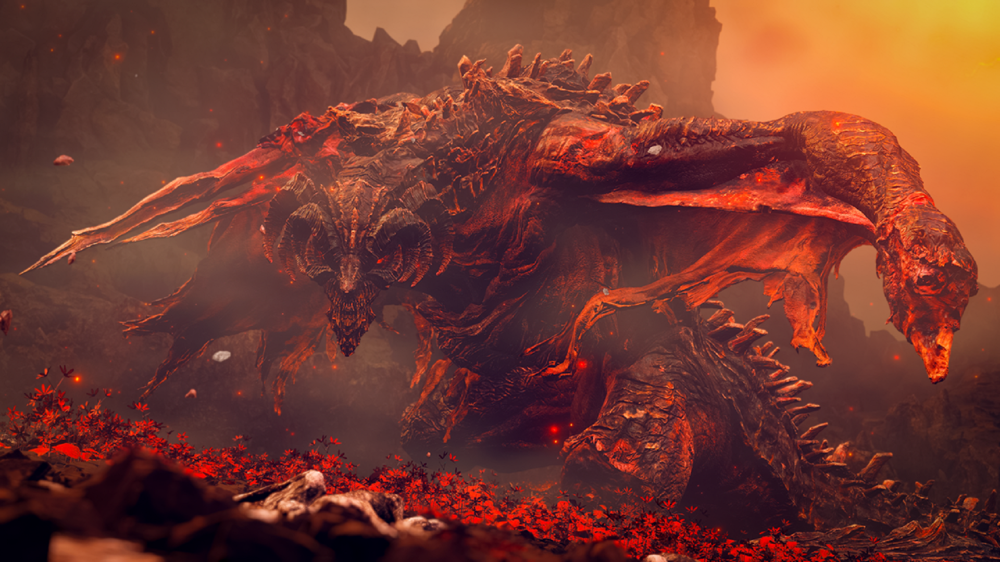
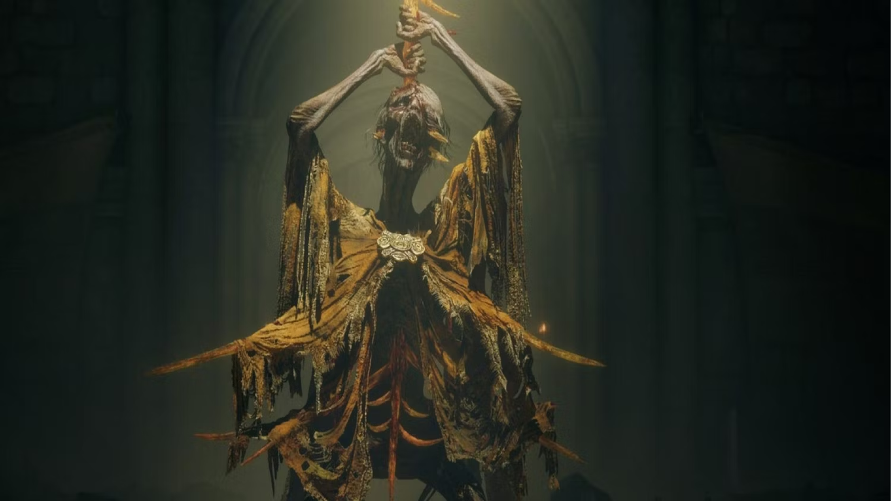
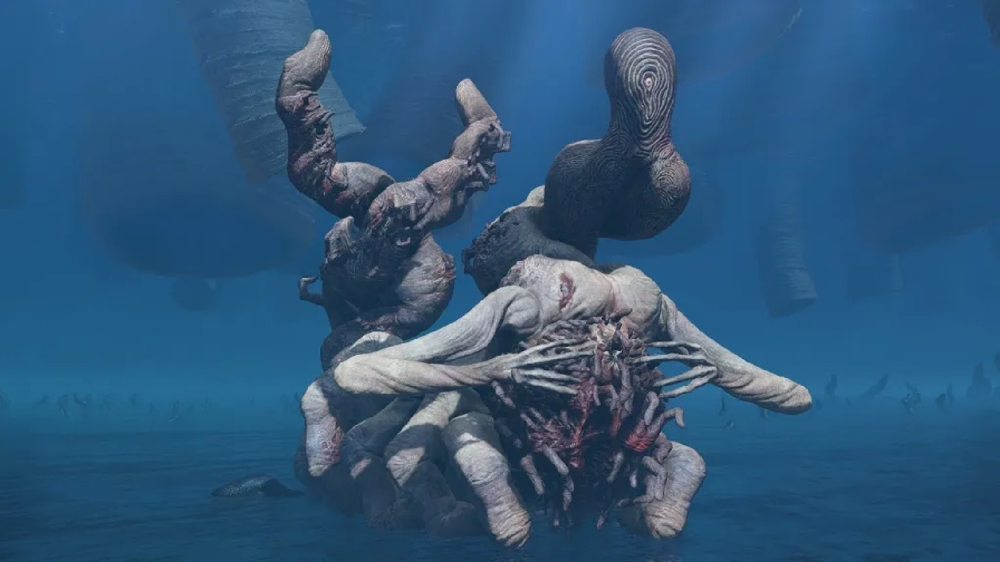
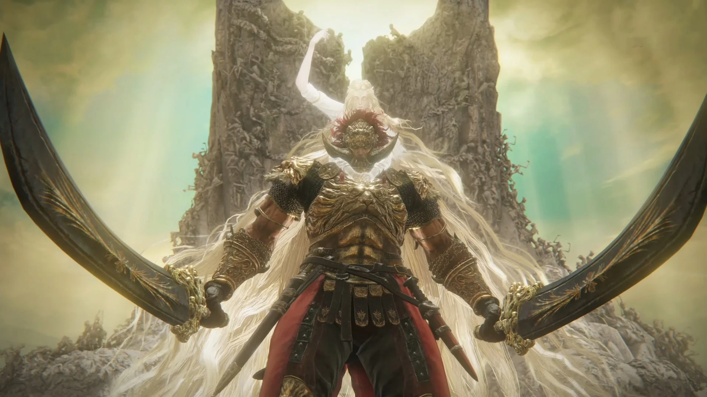
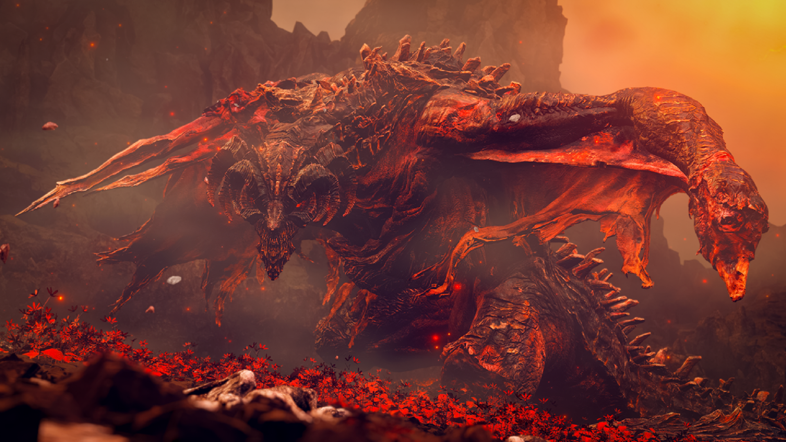
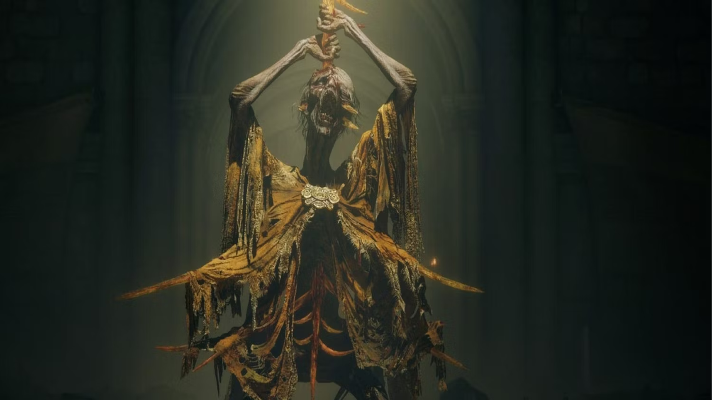
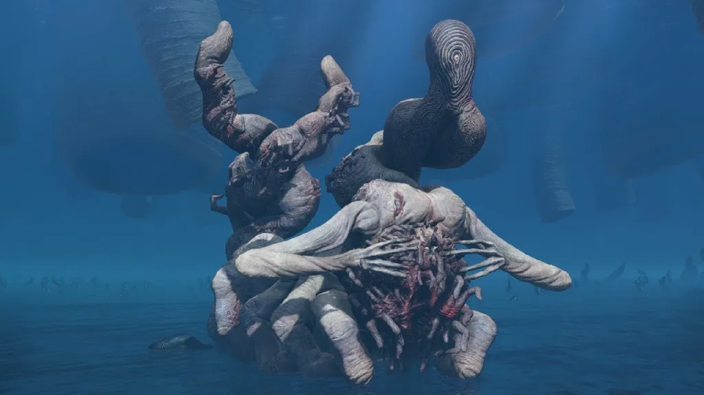
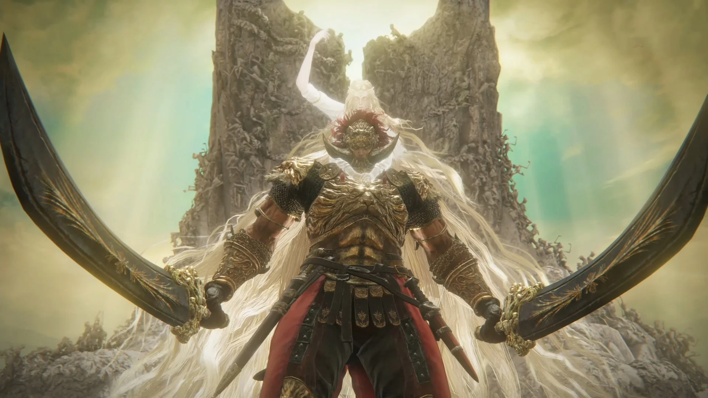

Leão Dançante da Besta Divina
As bestas divinas eram mensageiras dos céus. Os guardiões esculpidos são representações usadas para realizar o ritual da dança do leão durante o festival da torre em Belurat, Tower Settlement.
Rellana, a Cavaleira da Lua Gêmea
Nascida na Família Real Cariana, Rellana é a irmã mais nova de Rennala. Ela rejeitou seu direito de primogenitura e escolheu ficar ao lado de Messmer.
Comandante Gaius
O comandante Gaius era um notável guerreiro e estrategista militar que montava um javali gigante como seu corcel.
Scadutree Avatar
O Avatar da Scadutree é o guardião da Scadutree, bem como o detentor da Grande Runa de Miquella depois que Miquella da Haligtree a descartou.
Cavaleiro Putrescente
O Cavaleiro Putrescente era uma massa de carne pútrida que absorvia o néctar de Santa Trina, transformando-o em um cavaleiro dedicado ao serviço de Santa Trina.
Messmer, o Empalador
Messmer era filho de Marika. Ele nasceu com uma serpente negra que ameaçou subjugá-lo, Messmer chamou-lhe de Serpente Abissal. Marika foi capaz de conter sua influência removendo um dos olhos de Messmer e substituindo-o por um selo de graça.
Romina, Santa do Broto
Romina é uma das vítimas da cruzada de Messmer, o Empalador, em todo o Reino das Sombras, com sua igreja sendo totalmente queimada. Depois, ela descobriu um elemento divino, mas distorcido, e o teceu na Podridão Escarlate.
Bailey o Horror
Bayle, o Horror era um lendário dragão negro que se diz ser o ancestral dos dracos. Há muito tempo, Bayle traiu os dragões antigos e entrou em confronto com o Senhor dos Dragões Placidusax.
Midra, Senhor da Chama Frenética
Há muito tempo, o grande Sábio Midra tentou se tornar um Lorde da Chama Frenética, no entanto, ele acabou falhando. Perfurado pelos espinhos ramificados da Grande Espada da Perdição, seu poder foi suprimido pelo chifre.
Metyr, Mãe dos Dedos
Metyr, Mãe dos Dedos, foi a primeira de todas as estrelas a cair sobre as Terras Intermediárias. Ela possuía um microcosmo que lhe permitia receber mensagens da Vontade Maior.
O chefe final de Shadow of the Erdtree
Radahn era filho da rainha Rennala e Radagon. Ele é considerado o herói mais poderoso dos semideuses, e era temido como o semideus mais forte.